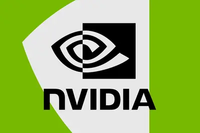
其他
其他全部主題
A memo circulated earlier this year reportedly claimed that China’s Ministry of State Security recruited a female technology executive to spy on Nvidia's CEO.
IT之家 11 月 8 日消息，评测网站 Metacritic 已在 11 月 5 日开放《塞尔达传说：时之笛》重制版游戏玩家评分。 目前本作的用户评分为 9.7 分 ， 成为 M 站史上用户评分最高的游戏 。 作为参考，以下是最新的 M 站用户评分排名： 第一名：《塞尔达传说：时之笛》重制版，9.7 分 第二名：《光与影：33 号远征队》，9.4 分 第三名：《寂静岭 2》（2001），9.3 分 第三名：《巫师 3：狂猎 — 血与酒》，9.3 分 第三名：《生化危机：安魂曲》，9.3 分 第三名：《斯普拉遁涂击队》，9.3 分 IT之家了解到，《时之
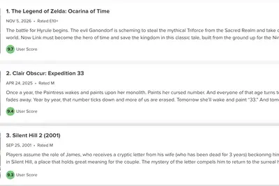
IT之家 11 月 8 日消息，埃森哲（Accenture）被指发布了一份充斥人工智能“幻觉”的研究报告，其中不仅包含大量虚假信息，还出现了多处疑似捏造的研究案例。 据 GPTZero 最新分析，这家咨询巨头发布的一份报告涉嫌包含 15 条虚假引用，以及完全虚构的案例研究，因此正受到外界审查。 这份名为《跨越式发展》（Leapfrogging Development）的报告由埃森哲与马德里 IE 大学的研究人员合作发布，旨在探讨人工智能如何提高非洲农业产业的生产力。 埃森哲否认相关错误是由人工智能造成的。 不过，这一事件仍可能令埃森哲陷入尴尬境地。此前，
IT之家 11 月 8 日消息，任天堂《塞尔达传说：时之笛》重制版于 11 月 5 日登陆了 Switch 2，但游戏发售后没过多久，就已经有人成功让其在越狱版 PlayStation 5 和 iPhone 上运行。 在 PS5 方面，开发者 Vampinity 在 GitHub 上的 EglantinePS5 项目仓库中公布了测试结果。EglantinePS5 是一款移植到 PS5 平台的 Switch 模拟器，基于 Eden 模拟器开发。 IT之家注意到，测试显示，在 PS5 12.40 版系统固件上，游戏已经能够读取存档，玩家操控林克（Link）走
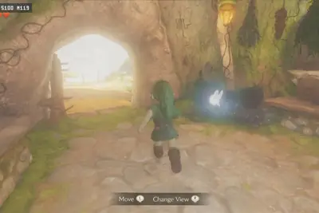
IT之家 11 月 8 日消息，由设计师胡安 · 布伊斯（Juan Buis）开发的一款名为“Backglow”的新应用，允许用户自定义新款 MacBook Pro 笔记本电脑顶盖上的发光苹果 Logo。 该应用的免费版本允许用户手动调节苹果 Logo 的亮度，而且不受 MacBook Pro 屏幕亮度设置的影响。用户也可以一键彻底关闭 Logo 灯光，无需通过终端（Terminal）执行命令。 免费版本还提供一种名为“Breathe”的呼吸模式，可以让苹果 Logo 的灯光缓慢、柔和地明暗交替，效果类似于老款 MacBook 上的睡眠指示灯。 用户只需
IT之家 11 月 8 日消息，特斯拉 CEO 埃隆 · 马斯克（Elon Musk）当地时间周六表示，为了在明年拆除生产线、转而扩大 Cybercab 产能之前完成现有 Cybertruck 订单，特斯拉将为 Cybertruck 增加一个额外生产班次。 马斯克在社交平台 X 上发文称：“目前 Cybertruck 的积压订单量远超特斯拉在明年 6 月至 7 月左右拆除生产线、为 Cybercab 扩产之前所能完成的数量。” 他补充说：“我们将增加一个额外班次，尽可能确保按时完成所有订单。” IT之家注意到，就在马斯克发表上述言论的前一天，他曾表示，特
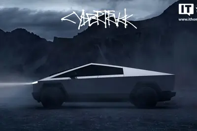
IT之家 11 月 8 日消息，据彭博社报道，当地时间周六，欧洲多地继续爆发反对数据中心建设的抗议活动。民众走上街头，表达对数据中心扩张可能带来的社会和环境影响的担忧。 据爱尔兰国家广播电视台（RTÉ）报道，约有 2000 人在都柏林举行游行。芬兰广播公司 Yle 报道称，约有 1300 人聚集在赫尔辛基，芬兰多个规模较小的城镇也举行了示威活动。 由当地民主运动组织和气候抗议团体组成的联盟“停止肮脏数据中心”（Stop Dirty Data Centres）表示，此次行动旨在“阻止人工智能数据中心不受约束地扩张，防止我们的民主制度被大型科技企业的利益绑架
On Equity, we unpacked what the midterms mean for the tech industry.
Article URL: https://apiiro.com/blog/coding-agents-leaking-secrets-github-dont-ask-again Comments URL: https://news.ycombinator.com/item?id=50407882 Points: 106 # Comments: 74
Around 7PM each weeknight, I find myself standing in front of the fridge, trying to decide on something for dinner that won't make my husband complain, "Chicken again?" Yes, I should meal plan more, but I don't, so this is where I'm at. A nightly battle in which the chicken usual
Today, I’m talking with Alex Stamos, chief security officer at Cognition and longtime cybersecurity expert, about what a mess cybersecurity is right now. This episode is part one of a special series looking at AI in real life. I’ve always enjoyed talking to Alex because he’s so d
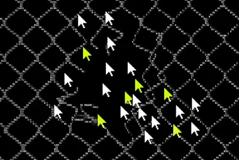
IT之家 11 月 7 日消息，美国联邦治安法官谢文辉（Alex Tse）裁定，Anthropic 必须继续应对 Claude Max 套餐使用额度涉嫌误导消费者的主要指控。据 Courthouse News 报道，谢文辉周五驳回了案件中的其他几项诉求。 Anthropic 宣传称，月费 100 美元 （IT之家注：现汇率约合 668.6 元人民币） 和 200 美元 （现汇率约合 1,337 元人民币） 的 Max 套餐，使用额度 分别是 Pro 套餐的 5 倍和 20 倍 。但今年 6 月提起诉讼的消费者指控，如果按整周计算，实际额度 远远达不到宣传
IT之家 11 月 7 日消息，当地时间 11 月 5 日，GitHub 发布博文，称上周在 GitHub Universe 大会上，正式公布了全新的 Git 存储架构，代号“Rubicon”。 官方表示，该架构不仅具备每秒处理数千次写入的能力，还能实现读取按需水平扩展。经内部压力测试验证，新架构能够在保持极低读取延迟的同时， 支持单个代码仓库容纳 5000 个智能体（Agent）并发协作，并承受每秒高达 7200 次的代码推送 。 IT之家获悉，该架构目前已经开启 小范围定向内测（limited private preview） ，并计划于 明年初逐步
IT之家 11 月 7 日消息，据 RT今日俄罗斯 报道，当地时间 11 月 6 日，特斯拉 CEO 埃隆 · 马斯克接受投资者罗恩 · 巴伦采访时表示， 他热爱中国，并高度评价中国汽车工业的竞争力 。 “中国令人惊叹。顺便说一句， 我爱中国 。去那里旅行令人深受鼓舞，”马斯克在采访中说。他同时指出，在上海生产的特斯拉 Model Y 是中国最畅销的电动汽车，但强调实现这一成绩“并不容易”。 马斯克特别补充道：“ 中国汽车公司非常厉害。 ” 据IT之家此前报道，今年 9 月，马斯克接受了央视财经专访。当谈及 AI，他表示中国的 AI 大模型整体而言非常出
IT之家 11 月 7 日消息，据路透社报道，一场构建 AI 基础设施的全球竞速，正推动数十亿美元巨资涌入先进封装领域。这一过去并不起眼的技术环节，如今已成为打造全球顶尖处理器的关键瓶颈。 “ 过去，封装永远是那种你根本不必操心的事情。 ”英特尔前首席执行官、现任风投机构 Playground Global 合伙人帕特 · 基辛格（Pat Gelsinger）近日对媒体感慨道。 市场研究机构 Yole Group 预测， 先进封装市场规模预计将于 2026 年首次超越传统封装 ，相关资本支出预计将逼近 280 亿美元 （IT之家注：现汇率约合 1,872
IT之家 11 月 7 日消息，漫步者旗下电竞品牌 HECATE 现已推出 GT3 降噪蓝牙游戏耳机， 售价 265 元 ，焕新补贴 10% 到手价 238.5 元。 降噪方面，GT3 支持最高 -50dB 深度混合降噪 ，提供深度降噪模式、舒适降噪模式、环境声模式三种模式；通话降噪则采用四麦 ENC + AI 算法。 GT3 搭载 11mm 镀钛动圈单元 ，采用 TPU + PEN + 真空镀钛三层“三明治”复合振膜设计；针对游戏场景专门调校 Focus+ 游戏声学算法，可强化 FPS 游戏中的脚步声与枪声方位感；搭载漫步者专属 LLAT 超低延时技术
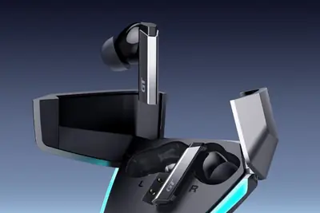
Anthropic is using AI to build more powerful AI. And it appears to be working remarkably well, with the company's models improving roughly twice as quickly as a year ago, with little indication of slowing down. That's according to a new report published Thursday by the AI safety
IT之家 11 月 7 日消息，据索尼中国资讯公众号，在 11 月 5-10 日期间举行的第九届进博会上，索尼中国全球首发 面向居家养老的隐私友好型无线感知跌倒检测系统 。 该系统通过 Wi-Fi 信号感知人体活动，无需佩戴额外设备，也不进行影像采集，面向卧室、卫生间等居家环境以及养老机构、社区养老服务场景，帮助看护人员及时发现跌倒情况。 该系统利用 Wi-Fi 信号感知人体活动。人体活动会改变无线信号的传播特征，系统据此采集信道状态信息（CSI），结合人体运动特征与深度学习算法识别跌倒事件，实时检测并触发现场的声光提示，或通过 App 及小程序告警。
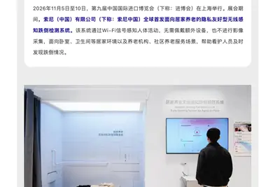
IT之家 11 月 7 日消息，漫步者 W900NB 30 周年典藏版头戴蓝牙耳机现已上架电商平台，将于 11 月 9 日 20:00 开售， 售价 1159 元 。 这款耳机有晨雾白、暗夜黑、深海蓝三种颜色可选； 限量 3000 套 ，每台配备独立蚀刻编号。 这款耳机配备 8 颗高精度广角硅麦，采用 6 颗 FF 前馈麦环形布局 + 2 颗 FB 反馈麦的组合， 降噪深度达 -50dB ；采用 6nm 制程 6 核异构芯片，集成 Arm Ethos U55 独立 NPU，实现端到端 AI 拾音降噪；搭载六轴传感头部追踪技术， 支持杜比全景声 。 这款耳
The apps and platforms that help family caregivers manage their loved ones’ needs are becoming more capable, but the broader issue of caregivers’ well-being remains unsolved.
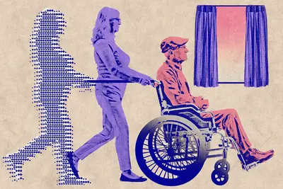
IT之家 11 月 7 日消息，百度地图官方今日宣布， 鸿蒙专属室内导航功能上新 。 据介绍， 百度地图鸿蒙专属室内导航功能基于华为星迹定位技术 ，可从进商场到找店铺，精准定位目的地；首批上线全国 22 个城市、 覆盖 106 家大型商业体 / 热门商场 ；支持自动切换楼层，找入口、坐电梯，室内室外不切换。 据IT之家此前报道，今年 10 月 12 日，在华为终端创新技术沟通会， 华为终端 BG CTO、华为终端 BG 硬件工程与产品开发管理部部长李小龙分享了华为星迹定位技术的核心亮点 。 随着隧道、跑步、地库、滑雪、室内、高架 / 运动场等场景的拓展，
IT之家 11 月 7 日消息，当地时间 11 月 5 日，谷歌发布博文，介绍在《自然》（Nature）发表的最新研究成果。 谷歌推出了名为 AI-PPG-ACC-HTN 的多模态 AI 系统。该系统无需袖带校准，使用普通消费级智能手表便能被动检测高血压迹象。 官方表示，与常规方案试图估算极易受瞬时环境噪声干扰的单次瞬时收缩压与舒张压不同，新系统转变了解决思路：通过聚合连续多天采集的被动生理特征， 专注于识别个体潜在且持续存在的高血压状态 。 自监督预训练 ：使用超 49 万小时无标注数据训练 1D-CNN，通过对比学习让模型自主挖掘复杂的心血管生理特征
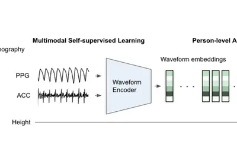
存在Linux核心網路子系統的9.8分重大漏洞CVE-2026-98432，影響Linux 核心的IPv4 TCP連線處理機制，並可能導致遠端程式碼執行（RCE），於10月底浮出檯面，由於AI模型廠商Anthropic揭露其AI服務Claude編寫出利用這個漏洞的程式，使得相
高盛（Goldman Sachs）最新研究顯示，人工智慧正在重塑勞動市場，而因 AI 影響而失業的勞工，重返職 […]
OpenAI 估值再創新高，但募資未達預期。相較對手 Anthropic 申請上市，OpenAI 以安全為由審慎看待 IPO，凸顯 AI 產業於資金、風險與上市時機的挑戰。
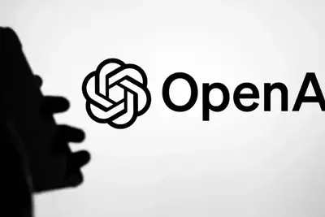
人工智慧正加速進入工業現場，然而要從單點試驗走向穩定營運，企業仍須建立連貫且可信賴的資料基礎。AVEVA（劍維 […]
AI 影片生成新創 Runway 共同創辦人暨共同執行長 Anastasis Germanidis，11 月 […]
AI 電商新創公司 Dalet Labs 近日正式走出隱身模式，對外宣布完成 700 萬美元種子前融資，並同步 […]
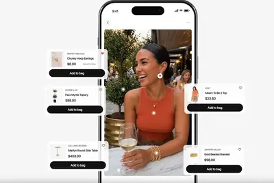